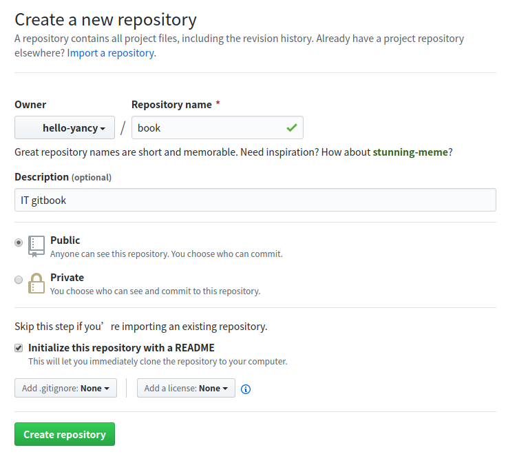
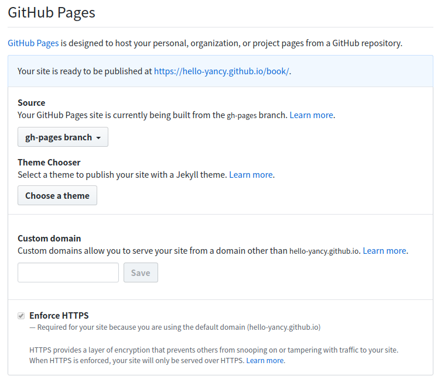

1. 准备工作
1.1 安装Node.js
1.2 安装GitBook
使用如下命令安装 GitBook 命令行工具：
$ npm install gitbook-cli -g
输入如下命令，查看 GitBook 版本，验证是否安装成功
$ gitbook -V
2. 创建新书
2.1 新建仓库
在 Github 上新建一个仓库 book ，用于托管代码，如下：

2.2 初始化新书
创建一个本地目录，将 book 仓库克隆到本地，并使用 gitbook init 命令初始化
$ mkdir gitbook
$ cd gitbook
$ git clone https://github.com/hello-yancy/book
$ cd book
$ gitbook init
2.3 预览新书
使用以下命令会运行一个 web 服务, 通过 http://localhost:4000/ 预览书籍
$ gitbook serve
2.4 归档源码
2.4.1 添加.gitignore文件
在 book 目录下，新建 .gitignore 文件，并在该文件中，输入如下内容：
_book
node_modules
说明：
- 使用 gitbook serve 或者 gitbook build 命令后，会在 _book 目录下生成静态网站文件，这些文件是不需要归档到保存源码的 master 分支的
- 使用 gitbook install 命令后，会在 node_modules 目录下安装插件，这些文件也是不需要归档到 master 分支的
2.4.2 添加publish.js文件
在 book 目录下，新建 publish.js 文件，并在该文件中，输入如下内容：
var ghpages = require('gh-pages');
ghpages.publish('_book', {
branch: 'gh-pages',
repo: 'https://github.com/hello-yancy/book'
}, function(){
console.log('push to origin gh-pages success')
});
说明：
- 该文件是一键式发布 GitBook 的脚本，具体使用方法参考发布新书章节
- branch：将 _book 目录下的所有文件上传到 gh-pages 分支
- repo： gh-pages 分支的路径
2.4.3 上传源码
将 book 目录下的所有文件，作第一次提交，提交到 master 分支，如下：
$ git add SUMMARY.md publish.js .gitignore
$ git commit -m "first commit"
$ git push origin master
提交后， master 分支下的文件目录结构如下：
- book
|- .gitignore
|- README.md
|- SUMMARY.md
|- publish.js
2.5 发布新书
2.5.1 创建 gh-papes 分支
此时 book 目录下，使用 gitbook serve 命令已经可以浏览新书了，接下来我们将生成的静态网站文件，提交到 gh-papes 分支，作第一次新书发布（此时 Github 上的 book 仓库应该只有 master 分支，发布后会自动创建 gh-papes 分支）
在 2.4.2 章节已经提到了，将使用 publish.js 脚本来发布 GitBook，由于该脚本使用了gh-pages组件包，因此先要安装该组建包，命令如下：
$ npm install gh-pages --save-dev
安装成功之后(仅需安装一次)，使用如下命令发布 GitBook
$ node publish.js
2.5.2 开启 GitHub Pages 功能
必须打开 GitHub Pages 后，才能在 GitHub 上浏览新书。开关在 book 仓库的 Setting > Options > GitHub Pages 路径下，操作方法如下：
